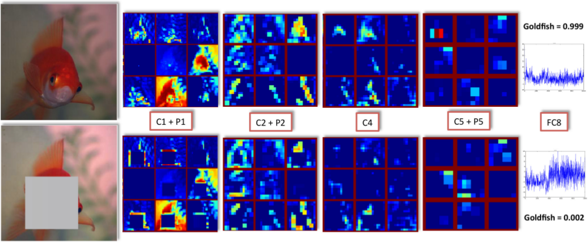

This paper introduces self-taught object localization, a novel approach that leverages deep convolutional networks trained for whole-image recognition to localize objects in images without additional human supervision, i.e., without using any ground-truth bounding boxes for training. The key idea is to analyze the change in the recognition scores when artificially masking out different regions of the image. The masking out of a region that includes the object typically causes a significant drop in recognition score. This idea is embedded into an agglomerative clustering technique that generates self-taught localization hypotheses. Our object localization scheme outperforms existing proposal methods in both precision and recall for small number of subwindow proposals (e.g., on ILSVRC-2012 it produces a relative gain of 23.4% over the state-of-the-art for top-1 hypothesis). Furthermore, our experiments show that the annotations automatically-generated by our method can be used to train object detectors yielding recognition results remarkably close to those obtained by training on manually-annotated bounding boxes.
